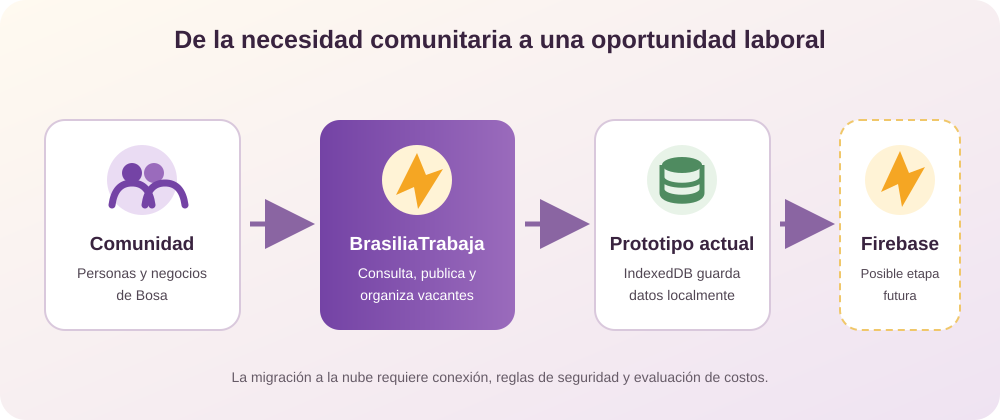

Para desarrollar BrasiliaTrabaja se emplean recursos visuales, herramientas de programación y servicios digitales que permiten organizar la información y construir una página de empleo clara para la comunidad de Bosa.


Para desarrollar BrasiliaTrabaja se emplean recursos visuales, herramientas de programación y servicios digitales que permiten organizar la información y construir una página de empleo clara para la comunidad de Bosa.
Logo, banners, fotografías, paleta de colores, tipografías, mapas mentales, bocetos y storyboard. Estos elementos comunican la identidad del proyecto y facilitan la comprensión de cada pantalla.
HTML estructura el contenido, CSS mejora la presentación y la adaptación a diferentes pantallas, y JavaScript puede incorporar filtros, formularios y otras funciones interactivas.
Firebase se contempla para administrar perfiles, vacantes y postulaciones en una futura versión funcional, aplicando reglas de seguridad y cuidado de los datos personales.
Visual Studio Code para editar, GitHub para organizar versiones, Chrome DevTools para probar la página, hojas de cálculo para costos y formularios para recopilar opiniones de la comunidad.

Se emplearon fuentes académicas y documentación para el marco teórico, encuestas para recoger percepciones de la comunidad, hojas de cálculo para organizar respuestas y costos, y un cuestionario UEQ adaptado para revisar la experiencia con 20 participantes.
HTML estructura las páginas, CSS presenta la interfaz y JavaScript permite incorporar interacciones. Visual Studio Code apoya la edición, GitHub el control de versiones y las herramientas del navegador la inspección visual y funcional. El storyboard y los mapas mentales apoyaron la planeación.
La versión descrita como prototipo utiliza IndexedDB local. Firebase y Google Cloud se consideran opciones para una versión futura con información centralizada; no se deben presentar como servicios ya integrados en el prototipo. Para adoptarlos sería necesario definir autenticación, reglas, privacidad, mantenimiento y presupuesto según el uso.